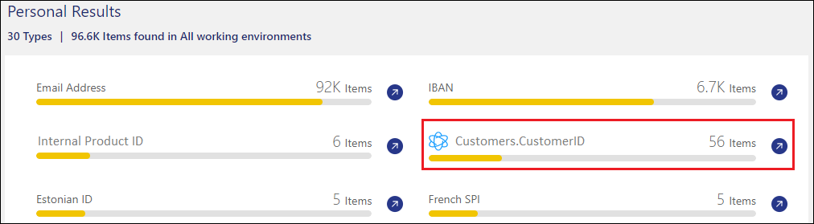
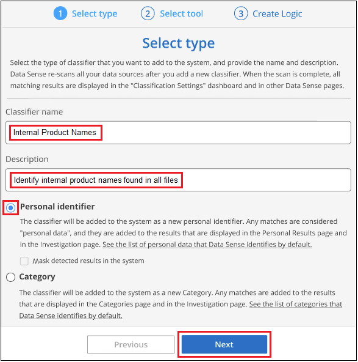
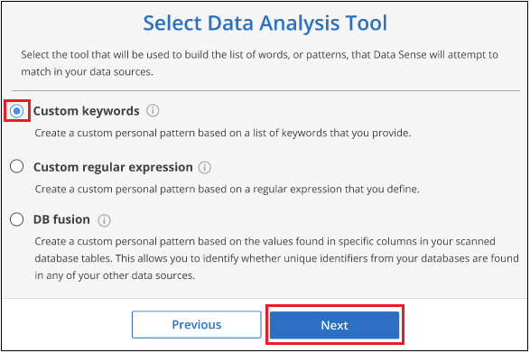

发行说明
发行说明
将个人数据标识符添加到BlueXP分类扫描中
 建议更改
建议更改
BlueXP分类为您提供了许多方法来添加BlueXP分类将在未来扫描中标识的自定义"个人数据"列表、从而让您全面了解组织的_all_文件中可能敏感的数据所在的位置。
-
您可以根据要扫描的数据库中的特定列添加唯一标识符。
-
您可以从文本文件中添加自定义关键字—这些字在数据中标识。
-
您可以使用正则表达式(regex)添加个人模式—正则表达式将添加到现有预定义模式中。
-
您可以添加自定义类别以确定数据中的特定信息类别。
所有语言均支持所有这些添加自定义扫描条件的机制。

|
只有在选择对数据源执行完整分类扫描后，才可以使用本节所述的功能。已执行仅映射扫描的数据源不会显示文件级详细信息。 |
从数据库中添加自定义个人数据标识符
我们称为_Data Fusion _的一项功能可用于扫描组织的数据、以确定您的数据库中的唯一标识符是否位于任何其他数据源中。您可以通过选择数据库表中的一个或多个特定列来选择BlueXP分类在其扫描中查找的其他标识符。例如，下图显示了如何使用 Data Fusion 扫描卷，分段和数据库，以确定 Oracle 数据库中所有客户 ID 是否存在。

如您所见，在两个卷和一个 S3 存储分段中发现了两个唯一的客户 ID 。此外，还将确定数据库表中的任何匹配项。
请注意、由于您正在扫描自己的数据库、因此在未来的BlueXP分类扫描中、将使用存储数据的任何语言来标识数据。
您必须拥有 "已至少添加一个数据库服务器" 到BlueXP分类、然后才能添加数据Fusion 源。
-
在配置页面中，单击源数据所在数据库中的 * 管理 Data Fusion * 。

-
单击下一页的 * 添加 Data Fusion 源 * 。
-
在 Add Data Fusion Sources 页面中：
-
从下拉菜单中选择数据库架构。
-
输入该模式中的表名称。
-
输入包含要使用的唯一标识符的 Column 或 Columns 。
添加多个列时，请在单独的行中输入每个列名称或表视图名称。

-
-
单击 * 添加 Data Fusion 源 * 。

下次扫描后、结果将在"个人结果"部分的"合规性信息板"中以及"个人数据"筛选器的"调查"页面中包含此新信息。例如，您用于此分层器的名称将显示在筛选器列表中 Customers.CustomerID。

删除Data Fusion 源
如果您在某个时刻决定不使用某个 Data Fusion 源扫描文件，则可以从 Data Fusion 清单页面中选择源行，然后单击 * 删除 Data Fusion 源 * 。

从词列表中添加自定义关键字
您可以将自定义关键字添加到BlueXP分类中、以便标识该信息在数据中的位置。您只需输入希望BlueXP分类识别的每个单词即可添加关键字。关键字将添加到BlueXP分类已使用的现有预定义关键字中、结果将显示在个人模式部分下。
例如、您可能希望查看所有文件中提及内部产品名称的位置、以确保这些名称在不安全的位置不可访问。
更新自定义关键字后、BlueXP分类将重新开始扫描所有数据源。扫描完成后、新结果将显示在BlueXP分类合规性信息板中的"个人结果"部分下、以及调查页面中的"个人数据"筛选器中。
-
在_Classification settings_选项卡中、单击*添加新的类元*以启动_Add Custom Classifier_向导。

-
在_Select type_页面中、输入分类器的名称、提供简短的问题描述 、选择*个人标识符*、然后单击*下一步*。
您输入的名称将在BlueXP分类UI中显示为符合分类器要求的已扫描文件的标题、并在"调查"页面中显示为筛选器的名称。
您还可以选中"屏蔽系统中检测到的结果"复选框、以便完整结果不会显示在UI中。例如、您可能需要执行此操作以隐藏完整的信用卡号或类似的个人数据(掩码将显示在UI中、如下所示："passe：[$] pass：[$] pass：[$] passe：[$]"3434)。

-
在_Select数据分析工具_页面中、选择*自定义关键字*作为要用于定义分类器的方法、然后单击*下一步*。

-
在_Create Logic_页面中、输入要识别的关键字-每一个词位于一条单独的行上-然后单击*验证*。
以下屏幕截图显示了内部产品名称(不同类型的所有权)。这些项目的BlueXP分类搜索不区分大小写。

-
单击*Done (完成)*、BlueXP分类将开始重新扫描您的数据。
扫描完成后、结果将在"个人结果"部分下的"合规性信息板"中以及"个人数据"筛选器的"调查"页面中包含此新信息。

如您所见、此类元的名称将在"个人结果"面板中用作名称。通过这种方式、您可以激活多组不同的关键字、并查看每个组的结果。
使用正则表达式添加自定义个人数据标识符
您可以使用自定义正则表达式(regex)添加个人模式来标识数据中的特定信息。这样、您就可以创建一个新的自定义regex、以确定系统中尚不存在的新个人信息元素。正则表达式将添加到BlueXP分类已使用的现有预定义模式中、结果将显示在个人模式部分下。
例如、您可能希望查看所有文件中提及内部产品ID的位置。如果产品ID结构清晰、例如、它是一个以201开头的12位数、则可以使用自定义正则表达式功能在文件中搜索它。此示例的正则表达式为*。b201\d｛9｝\b*。
添加正则表达式后、BlueXP分类将重新开始扫描所有数据源。扫描完成后、新结果将显示在BlueXP分类合规性信息板中的"个人结果"部分下、以及调查页面中的"个人数据"筛选器中。
请参见 https://regex101.com/ 如果您在构建正则表达式时需要帮助、选择*PYTHYTH*作为风味，以查看BlueXP分类将与正则表达式匹配的结果类型。
|
|
目前、我们不允许在创建正则表达式时使用模式标志-这意味着您不应使用"/"。 |
-
在_Classification settings_选项卡中、单击*添加新的类元*以启动_Add Custom Classifier_向导。
-
在_Select type_页面中、输入分类器的名称、提供简短的问题描述 、选择*个人标识符*、然后单击*下一步*。
您输入的名称将在BlueXP分类UI中显示为符合分类器要求的已扫描文件的标题、并在"调查"页面中显示为筛选器的名称。您还可以选中"屏蔽系统中检测到的结果"复选框、以便完整结果不会显示在UI中。例如、您可能希望执行此操作以隐藏完整的信用卡号或类似的个人数据。

-
在_Select数据分析工具_页面中、选择*自定义正则表达式*作为要用于定义分类器的方法、然后单击*下一步*。

-
在_Create Logic_页面中、输入正则表达式和任何邻近词、然后单击*完成*。
-
您可以输入任何合法正则表达式。单击*Validify*按钮可让BlueXP分类验证正则表达式是否有效，并且不会太宽泛，这意味着它将返回太多结果。
-
或者、您也可以输入一些接近词来帮助细化结果的准确性。这些字词通常位于所搜索模式的300个字符内(在找到的模式之前或之后)。在单独的行中输入每个词或短语。

-
此时将添加分类器、BlueXP分类将开始重新扫描所有数据源。此时将返回自定义类元页面、在此页面中、您可以查看与新类元匹配的文件数。扫描所有数据源的结果将需要一段时间、具体取决于需要扫描的文件数量。

添加自定义类别
BlueXP分类采用它扫描的数据并将其划分为不同类型的类别。类别是基于对每个文件的内容和元数据进行人工智能分析的主题。 "请参见预定义类别列表"。
类别可以通过向您显示所拥有的信息类型来帮助您了解数据的变化。例如、_resumes_或_empleee contracts _等类别可能包含敏感数据。调查结果时，您可能会发现员工合同存储在不安全的位置。然后，您可以更正此问题描述。
您可以将自定义类别添加到BlueXP分类中、以便确定数据资产的唯一信息类别在数据中的位置。您可以通过创建包含要标识的数据类别的"训练"文件来添加每个类别、然后让BlueXP分类扫描这些文件、以便通过AI进行"学习"、以便它可以标识数据源中的数据。这些类别将添加到BlueXP分类已标识的现有预定义类别中、结果将显示在"类别"部分下。
例如、您可能希望查看.gz格式的压缩安装文件在文件中的位置、以便在必要时将其删除。
更新自定义类别后、BlueXP分类将重新开始扫描所有数据源。扫描完成后、新结果将显示在BlueXP分类合规性信息板中的"类别"部分下、以及调查页面中的"类别"筛选器中。 "请参见如何按类别查看文件"。
您至少需要创建25个培训文件、这些文件包含您希望BlueXP分类识别的数据类别的示例。支持以下文件类型：
.CSV, .DOC, .DOCX, .GZ, .JSON, .PDF, .PPTX, .RTF, .TXT, .XLS, .XLSX, Docs, Sheets, and Slides
这些文件必须至少为100字节、并且必须位于可通过BlueXP分类访问的文件夹中。
-
在_Classification settings_选项卡中、单击*添加新的类元*以启动_Add Custom Classifier_向导。
-
在_Select type_页面中、输入分类器的名称、提供简短的问题描述 、选择*类别*、然后单击*下一步*。
您输入的名称将在BlueXP分类UI中显示为与您定义的数据类别匹配的已扫描文件的标题、并在调查页面中显示为筛选器的名称。

-
在_Create Logic_页面中、确保已准备好学习文件、然后单击*选择文件*。

-
输入卷的IP地址以及培训文件所在的路径、然后单击*添加*。

-
验证训练文件是否已被BlueXP分类识别。单击*。删除不符合要求的任何培训文件。然后单击*完成。

根据培训文件的定义创建新类别、并将其添加到BlueXP分类中。然后、BlueXP分类开始重新扫描所有数据源、以确定适合此新类别的文件。此时将返回自定义类元页面、在此页面中、您可以查看与新类别匹配的文件数。扫描所有数据源的结果将需要一段时间、具体取决于需要扫描的文件数量。
查看自定义分类器的结果
您可以在合规性信息板和调查页面中查看任何自定义分类器的结果。例如、此屏幕截图在"个人结果"部分的"合规性信息板"中显示匹配的信息。

单击  按钮以在"调查"页面中查看详细结果。
按钮以在"调查"页面中查看详细结果。
此外、所有自定义分类器结果都会显示在"Custom Classifiers (自定义分类器)"选项卡中、排名前6位的自定义分类器结果会显示在"Compliance Dashboard"(合规性信息板)中、如下所示。

管理自定义分类器
您可以使用*编辑类元*按钮更改已创建的任何自定义类元。

|
此时无法编辑Data Fusion类类。 |
如果您稍后决定不需要BlueXP分类来识别您添加的自定义模式，则可以使用*删除分类器*按钮删除每个项目。